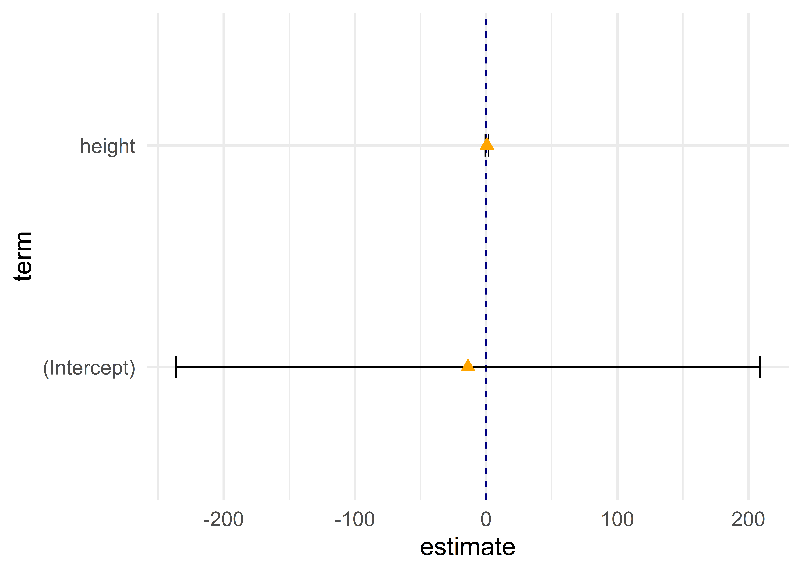

library(tidyverse)9 Regressionsmodelle: Erweiterungen
Nach den basics für Regressionsmodelle sehen wir uns in diesem Kapitel einige hilfreiche Erweiterungen von Regressionsmodellen in R an
Die folgenden Beispiele basieren vornehmlich auf dem starwars-Datensatz aus {dplyr}, hier ein kurzer Blick in die Daten:
starwars %>% select(name,height,mass,hair_color,gender)# A tibble: 87 × 5
name height mass hair_color gender
<chr> <int> <dbl> <chr> <chr>
1 Luke Skywalker 172 77 blond masculine
2 C-3PO 167 75 <NA> masculine
3 R2-D2 96 32 <NA> masculine
4 Darth Vader 202 136 none masculine
5 Leia Organa 150 49 brown feminine
6 Owen Lars 178 120 brown, grey masculine
7 Beru Whitesun lars 165 75 brown feminine
8 R5-D4 97 32 <NA> masculine
9 Biggs Darklighter 183 84 black masculine
10 Obi-Wan Kenobi 182 77 auburn, white masculine
# … with 77 more rowsUnser Beispiel ist ein simples: der Zusammenhang zwischen Größe und Gewicht der Star Wars Helden:
mod1 <- lm(mass ~ height, data = starwars)9.1 “tidy” Regressionskoeffizienten mit {broom}
summary() bietet einen einfachen Zugriff auf Regressionstabellen, allerdings verwende ich häufig {broom}. Mit broom::tidy(..., conf.int = TRUE) bekommen wir einen data.frame mit den Ergebnissen des Regressionsmodells, die wir bspw. in einem {ggplot2} weiterverarbeiten können - wenn uns die Standardlösung von modelplot() nicht weiterhilft:
library(broom) ## schon geladen als Teil des tidyverse
tidy(mod1, conf.int = TRUE)# A tibble: 2 × 7
term estimate std.error statistic p.value conf.low conf.high
<chr> <dbl> <dbl> <dbl> <dbl> <dbl> <dbl>
1 (Intercept) -13.8 111. -0.124 0.902 -236. 209.
2 height 0.639 0.626 1.02 0.312 -0.615 1.89tidy(mod1, conf.int = TRUE) %>%
ggplot(aes(y = term, x = estimate)) +
geom_vline(aes(xintercept = 0), linetype = "dashed", color = "navy") +
geom_errorbarh(aes(xmin = conf.low, xmax = conf.high), height = .1) +
geom_point(color = "orange", shape = 17,size = 3) +
theme_minimal(base_size = 16)
broom::glance() gibt uns einen ganze Reihe an Modellgütemaßen (R2, AIC, etc.) als data.frame aus:
glance(mod1)# A tibble: 1 × 12
r.squ…¹ adj.r…² sigma stati…³ p.value df logLik AIC BIC devia…⁴ df.re…⁵
<dbl> <dbl> <dbl> <dbl> <dbl> <dbl> <dbl> <dbl> <dbl> <dbl> <int>
1 0.0179 6.96e-4 169. 1.04 0.312 1 -386. 777. 783. 1.64e6 57
# … with 1 more variable: nobs <int>, and abbreviated variable names
# ¹r.squared, ²adj.r.squared, ³statistic, ⁴deviance, ⁵df.residual9.2 Nonstandard errors
Dealing with statistical irregularities (heteroskedasticity, clustering, etc.) is a fact of life for empirical researchers.
Grant McDermott
Die gute Nachricht ist, dass R eine ganze Reihe an Möglichkeiten bietet, Standard-Fehler zu korrigieren. Unter anderem mit {sandwich} oder {estimatr}.
Eine sehr einfache Variante ist die Korrektur von Standardfehlern in {modelsummary}, die wir uns etwas genauer ansehen:
Wir können sog. heteroskedasticity-consistent (HC) “robuste” Standardfehler mit der vcov-Option HC in modelsummary() anfordern. Die Hilfe-Seite für {modelsummary} bietet eine Liste mit allen Optionen.
Eine Option ist auch stata, um Ergebnisse aus Statas , robust zu replizieren. Hier mehr zu den Hintergründen und Unterschieden.
library(modelsummary)
modelsummary(list(mod1,mod1,mod1,mod1),vcov = c("classical","HC","HC2","stata"),gof_omit = "RM|IC|Log")| Model 1 | Model 2 | Model 3 | Model 4 | |
|---|---|---|---|---|
| (Intercept) | −13.810 | −13.810 | −13.810 | −13.810 |
| (111.155) | (22.963) | (23.456) | (23.362) | |
| height | 0.639 | 0.639 | 0.639 | 0.639 |
| (0.626) | (0.085) | (0.088) | (0.086) | |
| Num.Obs. | 59 | 59 | 59 | 59 |
| R2 | 0.018 | 0.018 | 0.018 | 0.018 |
| R2 Adj. | 0.001 | 0.001 | 0.001 | 0.001 |
| F | 1.040 | 56.856 | 52.753 | 54.928 |
| Std.Errors | Classical | HC | HC2 | Stata |
9.3 Fixed effects Modelle mit {fixest}
install.packages("fixest"){fixest}) ist zwar noch relativ neu, aber bietet eine große Auswahl an Möglichkeiten: logitische Modelle, mehr-dimensionale Fixed Effects, Multiway clustering, … Und es ist sehr schnell, bspw. schneller als Statas reghdfe. Für mehr Details empfiehlt sich die Vignette.
Die zentrale Funktion zur Schätzung linearer FE-Regressionsmodelle ist feols() - sie funktioniert ganz ähnlich zu lm(). Auch hier geben wir wieder eine Formel nach dem Schema abhängige Variabe ~ unabhängige Variable(n) an. Wir fügen lediglich mit | die Variable hinzu, welche die FEs festlegt:
library(fixest)
fe_mod1 <- feols(mass ~ height | species, data = starwars)
fe_mod1OLS estimation, Dep. Var.: mass
Observations: 58
Fixed-effects: species: 31
Standard-errors: Clustered (species)
Estimate Std. Error t value Pr(>|t|)
height 0.974876 0.044291 22.0105 < 2.2e-16 ***
---
Signif. codes: 0 '***' 0.001 '**' 0.01 '*' 0.05 '.' 0.1 ' ' 1
RMSE: 9.69063 Adj. R2: 0.99282
Within R2: 0.662493{fixest} clustert automatisch die Standardfehler entlang der FE-Variable (hier also species). Wenn wir das mal nicuth möchten, können wir mit der se-Option = "standard" ungeclusterte SE anfordern:
summary(fe_mod1, se = 'standard')OLS estimation, Dep. Var.: mass
Observations: 58
Fixed-effects: species: 31
Standard-errors: IID
Estimate Std. Error t value Pr(>|t|)
height 0.974876 0.136463 7.1439 1.3797e-07 ***
---
Signif. codes: 0 '***' 0.001 '**' 0.01 '*' 0.05 '.' 0.1 ' ' 1
RMSE: 9.69063 Adj. R2: 0.99282
Within R2: 0.662493summary(fe_mod1, cluster = ~species)OLS estimation, Dep. Var.: mass
Observations: 58
Fixed-effects: species: 31
Standard-errors: Clustered (species)
Estimate Std. Error t value Pr(>|t|)
height 0.974876 0.044291 22.0105 < 2.2e-16 ***
---
Signif. codes: 0 '***' 0.001 '**' 0.01 '*' 0.05 '.' 0.1 ' ' 1
RMSE: 9.69063 Adj. R2: 0.99282
Within R2: 0.662493{modelsummary} zeigt die geclusterten SE:
modelsummary(list(fe_mod1),gof_omit = "R|IC|Log|F")| Model 1 | |
|---|---|
| height | 0.975 |
| (0.044) | |
| Num.Obs. | 58 |
| Std.Errors | by: species |
9.4 Abschließende Bemerkungen
Zusammengefasst lassen uns {fixest} und {modelsummary} Standardfehler nach der eigentlichen Modellschätzung anpassen, indem wir die se or cluster Optionen verwenden.
Ein Blog Post von Grant Mcdermott argumentiert noch etwas ausführlicher, warum die nachträgliche Berechnung der Standardfehler (anstelle einer kompletten Neuschätzung des Modells) eine gute Idee ist - auch wenn es für Stata-Nutzende ein sehr ungewöhnliches Vorgehen ist.
Die exakte Replikation von Standardfehlern aus anderen Programmen (bspw, Stata) ist oft schwieriger als es zunächst scheint. Siehe auch die Diskussion hier Detaillierte vignette {fixest} wie SEs aus anderen Programmen repliziert werden können. Detailliertes Paper von den Autoren von {sandwich} zu diesem Thema.